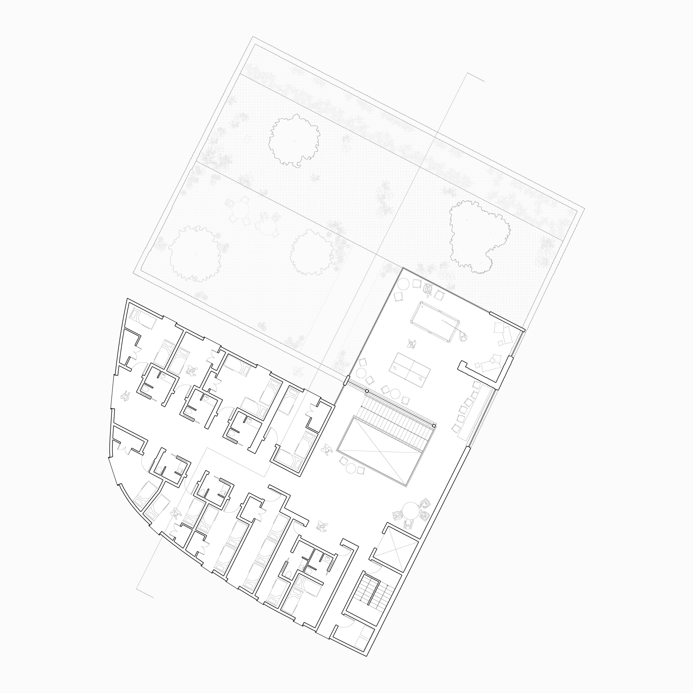
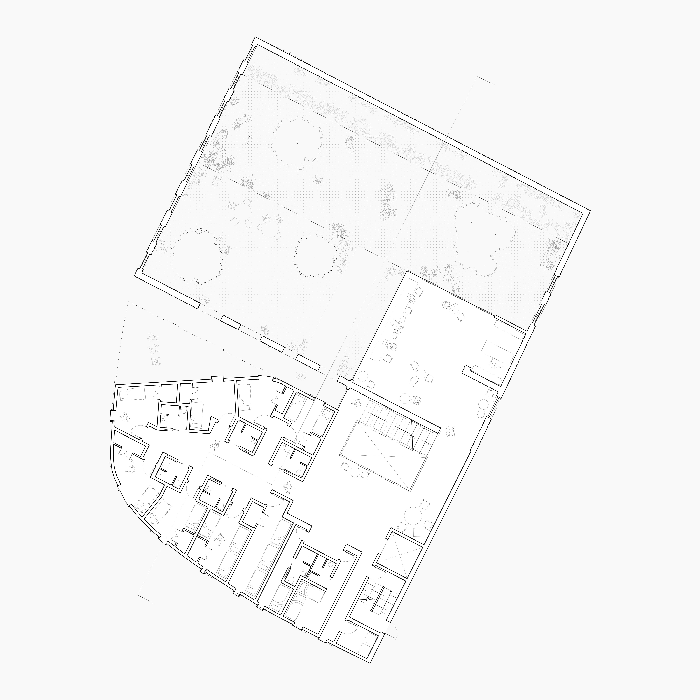
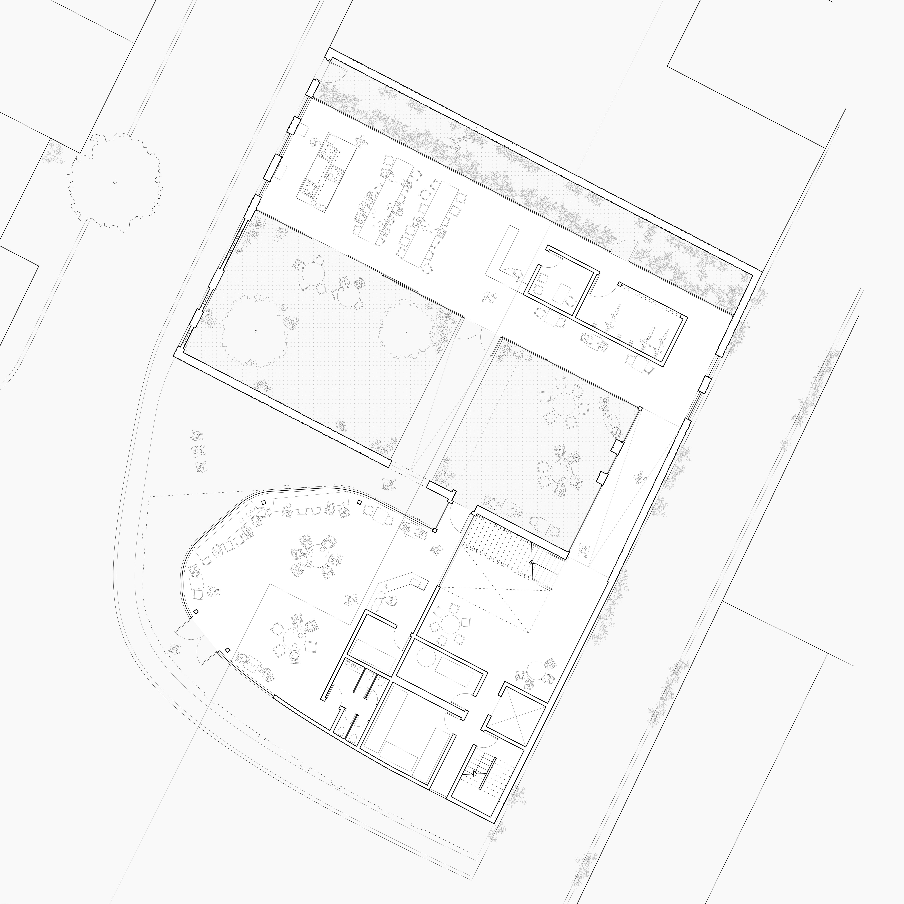
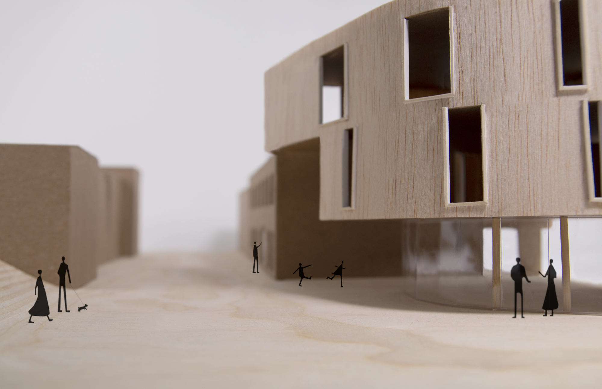

Spring Garden Hostel
The brick shell of a long-deserted shoe factory and a parcel of land adjacent to a heavy
intersection served as the site for urban hostel . The two-story brick facades became the
cornerstone of design throughout the adaptive reuse project and supported the play of
interstitial space, manipulating the experiences of inside and out. To maintain the experience
of solidarity within the existing shell, the hostel's private resident rooms are placed on higher
floors of the adjacent parcel. The interior of the brick shell serves predominately as a courtyard
and is flanked by a multitude of transparent semiprivate spaces. The hostel's public space is
located on the first floor of the additional parcel of land, drawing in foot traffic and granting
glimpses of the interior of the brick facades.
This project was designed in Spring 2019.



